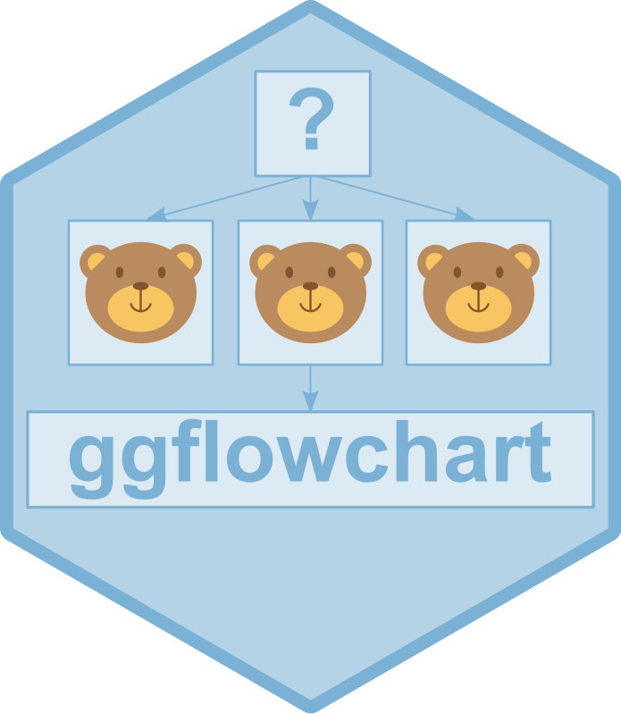
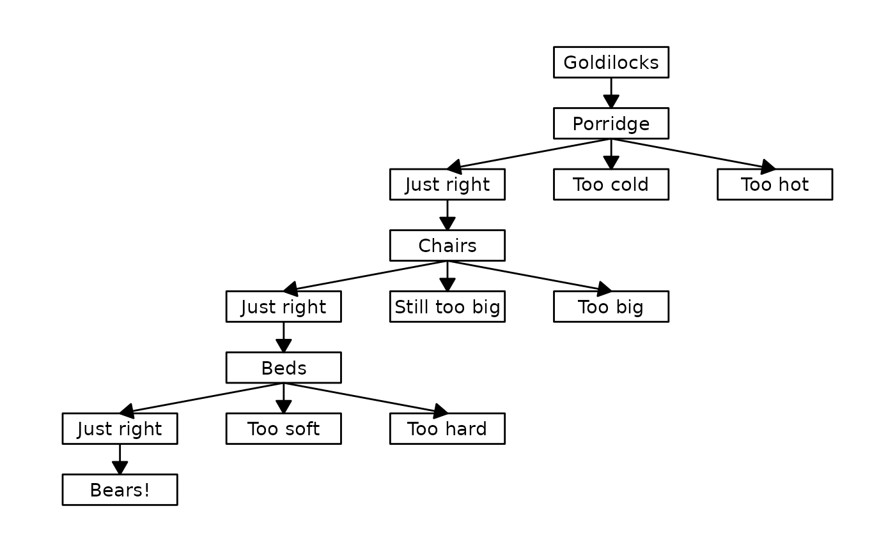
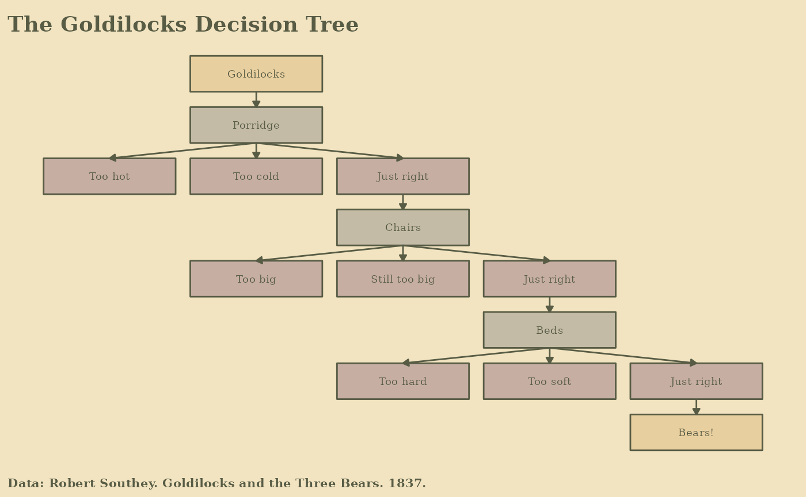

Decision Tree Example
decision-tree-example.Rmd
library(ggflowchart)
library(dplyr)
#>
#> Attaching package: 'dplyr'
#> The following objects are masked from 'package:stats':
#>
#> filter, lag
#> The following objects are masked from 'package:base':
#>
#> intersect, setdiff, setequal, unionDefine input data
The main input data is a two column data frame or tibble of edges. It must have two columns, with the first column containing node names for the “from” nodes, and the second containing node names for the “to” nodes. Node names must be unique.
goldilocks <- tibble::tibble(from = c("Goldilocks",
"Porridge", "Porridge", "Porridge",
"Just right",
"Chairs", "Chairs", "Chairs",
"Just right2",
"Beds", "Beds", "Beds",
"Just right3"),
to = c("Porridge",
"Too cold", "Too hot", "Just right",
"Chairs",
"Still too big", "Too big", "Just right2",
"Beds",
"Too soft", "Too hard", "Just right3",
"Bears!"))Optionally, also define additional node attributes.
node_data <- tibble::tibble(name = c("Goldilocks", "Porridge", "Just right", "Chairs",
"Just right2", "Beds", "Just right3", "Too cold",
"Too hot", "Still too big", "Too big", "Too soft",
"Too hard", "Bears!")) %>%
dplyr::mutate(label = gsub("\\d+$", "", name))Create the flowchart using the ggflowchart() function.
ggflowchart(goldilocks, node_data)
Optionally, add some styling using the {ggplot2} theme() function and title using the labs() function.
library(ggplot2)
ggflowchart(goldilocks,
node_data,
colour = "#585c45",
text_colour = "#585c45",
arrow_colour = "#585c45") +
scale_x_reverse() +
labs(title = "The Goldilocks Decision Tree") +
theme(plot.background = element_rect(colour = "#f2e4c1", fill = "#f2e4c1"),
plot.title = element_text(size = 20, hjust = 0.5, face = "bold", colour = "#585c45"))